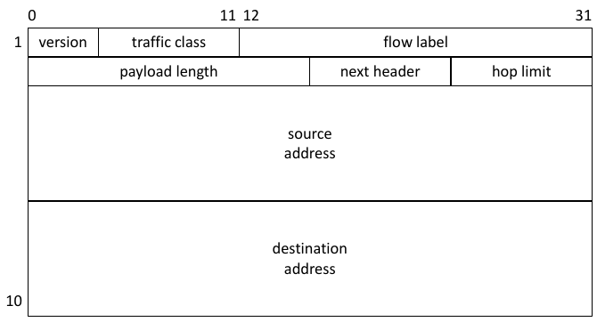
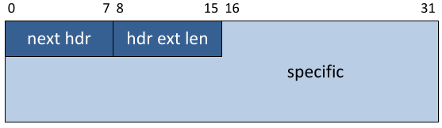

Grund für Wechsel von IPv4 zu IPv6:
Die Anzahl der freien Adressen im Adressraum von IPv4 wird allmählich
knapp. Die IANA hat bereits 2011 die letzten freien /8
IPv4-Adressblöcke an die Regional Internet Registrars (RIRs) vergeben.
X:X:X:X:X:X:X:X, wobei jede X-Gruppe aus 4 Hexzahlen besteht
::
::1/128
FF
FF02::1
11111111)
111111010 (die letzte 54 bit des 64 bit Präfix können frei gewählt werden)
111110
001
/12
/32
/48
/64
FFFE
::
::/128
::1/128

Figure 1: IPv6 Header
Felder:
Die Gesamtlänge eine IP Pakets (maximum transmission unit; MTU) ist \(2^{16} byte\).

Figure 2: Type-Length-Value Encoding eines extension headers
Felder:
Arten von extension headers:
Techniken:
AAAA oder A6 record hat, dann
kommuniziere mit dem entsprechenden System über IPv6 ansonsten
über IPv4